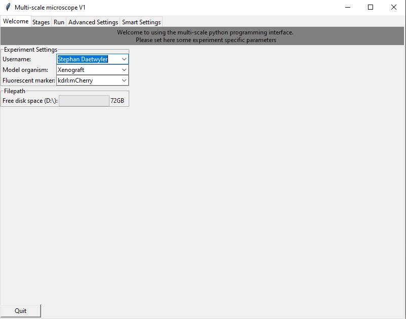
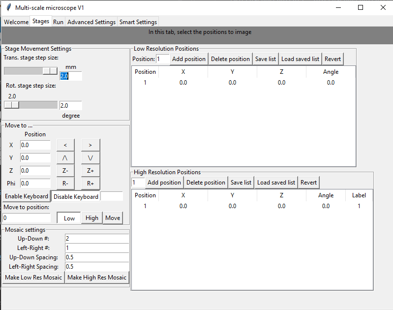
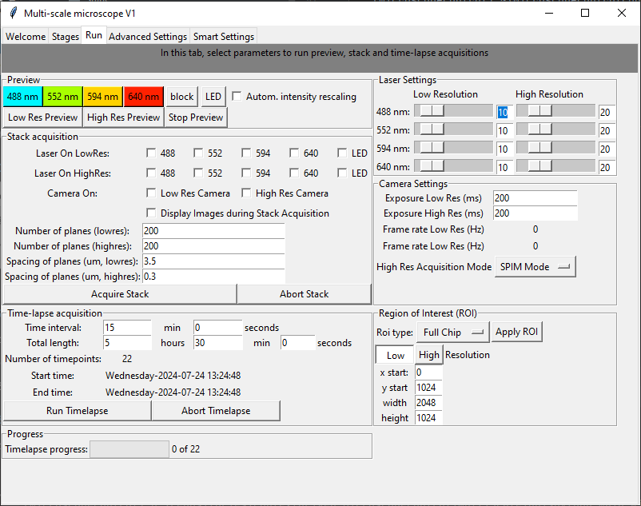
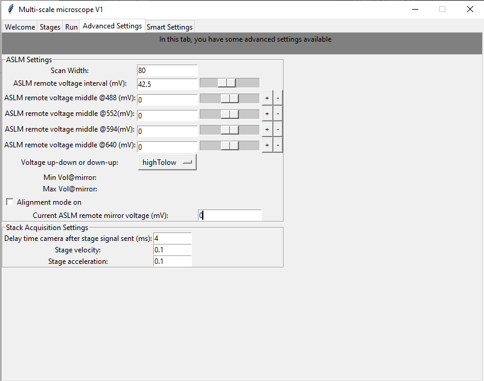
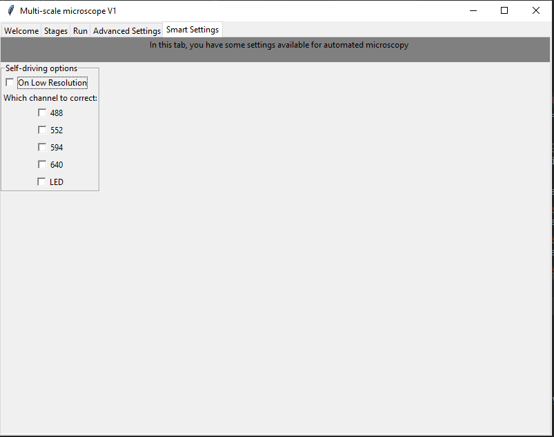
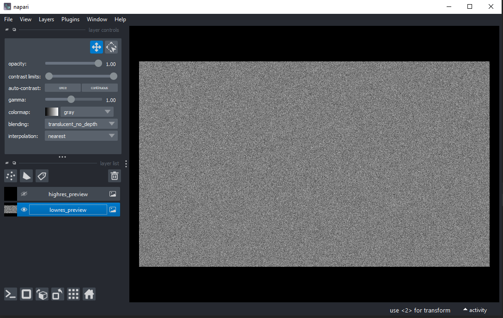

User interface (GUI) Walkthrough
Our user interface is organized into different notebooks corresponding to different tasks: a Welcome tab, a Stage settings tab, a Run tab, a tab for advanced settings and a tab for setting self-driving microscopy features.
As the microscope is designed with an underlying MVC design pattern, the GUI for user input can be started independent of the microscope:
(microscopecontrol) ~\MicroscopeControl\multiScale> cd gui
(microscopecontrol) ~\MicroscopeControl\multiScale\gui> python main_window.py
Welcome tab
Please set here the user name, model organism and fluorophores. The user name and model organism define the filepath under which the data is saved. Here, for example the data would be saved in the folder date_username_modelorganism. Moreover, the tab shows how much space is still on the harddrive.
Stage tab
In the stage tab, the acquisition positions are set and defined (Low Resolution Positions and High Resolution Positions table). To move the stage, new stage positions can be entered directly, the stage could be moved with the arrow buttons or movement with the keyboard can be activated. Moreover, a mosaic of stage positions can be generated from initially set positions. The step size for moving the stage manually is determined in the panel “Stage Movement Settings”.
Run tab
In the run tab, the user can start running a low-resolution or high-resolution preview and select the corresponding laser line for preview. To automatically rescale the intensity in the preview, tick the “Autom. intensity rescaling” box.
To start a stack acquisition, select the laser and cameras, number of planes and their spacing in the “Stack acquisition” panel. Pressing the “Acquire Stack” button starts a single stack acquisition.
To repeatedly run a stack acquisition, set the time interval and total length of time-lapse imaging, and start a time-lapse acquisition with “Run Timelapse”. Time-lapse progress is indicated in the “Progress panel”.
To modify acquisition settings, change the laser power of low-resolution and high-resolution acquisition, camera settings and acquisiton mode for the high-resolution camera (SPIM or ASLM), and the ROI used on the camera.
Advanced Settings tab
In the advanced settings tab, set the ASLM acquisition settings. Moreover, an alignment mode is available for the high-resolution SPIM acquisition to move the voltage of the remote voice coil and see how the ASLM focus changes over the field of view. Additionally, advanced settings for stack acquisition can be set such as stage acceleration and velocity.
Self-driving microscopy features
In the last tab, set settings for the self-driving microscopy module (which channels to use).
Image display with Napari
The previews and all acquired images are displayed in the Napari image viewer. It provides a state-of-the art image display that enables, amongst others, contrast adjustments, zooming to regions of interest, or change in color display